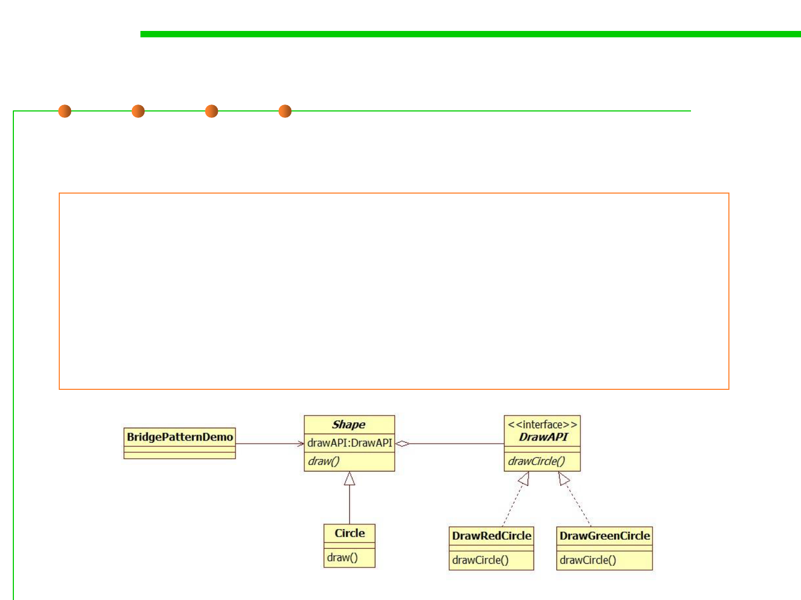

Example
6.2 Design Patterns for Maintainability
Use the Shape and DrawAPI classes to draw different colored circles
public class BridgePatternDemo {
public static void main(String[] args) {
Shape redCircle = new Circle(100,100, 10, new DrawRedCircle());
Shape greenCircle = new Circle(100,100, 10, new DrawGreenCircle());
redCircle.draw();
greenCircle.draw();
}
}